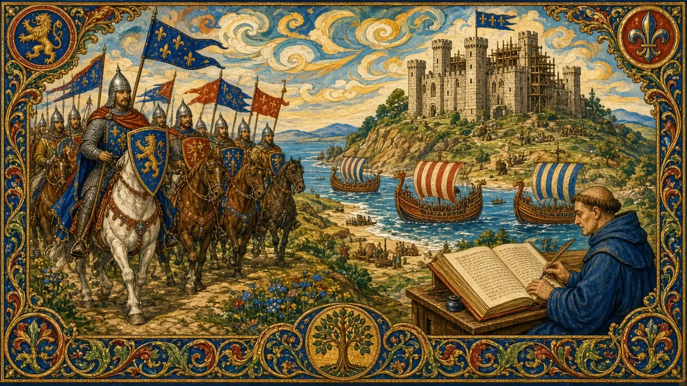
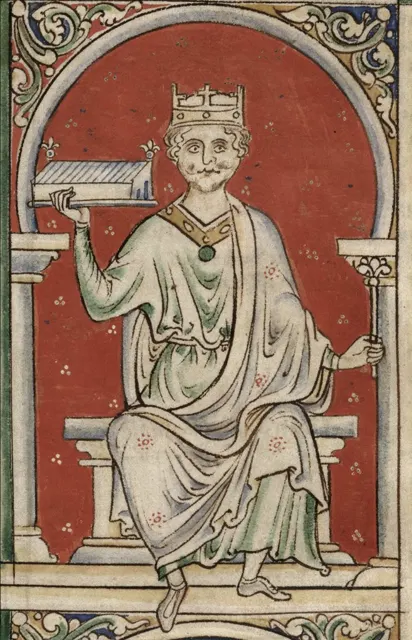

William II (Rufus)
A red-faced, quarrelsome king — killed by an arrow in the New Forest.
England · Reigned 1087–1100 · Stop 18 of the odyssey
← Learning from the Past: An English Odyssey · ← William the Conqueror · Henry I →

- Can an accident ever look too convenient?
- Why do people fall out with their religious leaders?
- What makes a ruler unpopular with writers?
The words for today's story
Each new word is hidden in a sentence. Read it aloud and say what you think the bold word means from the rest of the sentence — then reveal it and see how close you were.
Now use them — out loud
- Using any four of these words, predict: what kind of reign do you think this will be — and how might it end?
- Which words belong to power and which to danger? Sort them out loud and say why.


Credit: Matthew Paris, English monk, historian, and illustrator (c. 1200 – 1259) · via Wikimedia Commons, Public domain
The story, in three parts
Read each part. After it, there's a quick comprehension check (try the questions from memory first), then one thing to discuss.
Part 1 — The red king
William II, the Conqueror's third son, became king of England in 1087, while his elder brother Robert received Normandy. A rebellion in 1088 failed. William was a capable soldier who fought to win Normandy and pushed into Wales and Scotland.
Monks, who wrote most of the history, disliked him. He quarrelled with Archbishop Anselm, kept church posts empty so he could take their income, and his court was accused of immorality.
1. How was the Conqueror's land divided?
2. Why did monks dislike Rufus?
1. Robert received Normandy; William received England.
2. He quarrelled with Anselm and took Church income.
- How might the history be different if knights had written it instead of monks?
Part 2 — The New Forest
On 2 August 1100, William went hunting in the New Forest with a group including his younger brother Henry. Later accounts say that an arrow shot by Walter Tirel, a nobleman, glanced off a stag or a tree and hit the king in the chest. He died almost at once.
Tirel fled to France. Henry rode straight to Winchester to take control of the royal treasury.
1. Who is said to have shot the arrow?
2. What did Henry do immediately?
1. Walter Tirel.
2. Rode to Winchester and took control of the treasury.
- What looks suspicious in these facts?
Part 3 — Accident or murder?
Three days later, Henry was crowned at Westminster. Was it an accident? Hunting accidents were common, and Tirel always denied shooting the king. But Henry gained enormously and acted very fast. Historians remain divided.
The Rufus Stone in the New Forest marks the traditional spot.
1. What evidence suggests an accident?
2. What evidence suggests murder?
1. Hunting accidents were common; Tirel denied it.
2. Henry gained and acted very quickly.
- Which explanation do you find more convincing?
Grammar — Past Modals of Deduction
When the evidence is thin, historians must deduce. Past modals show how certain we are about what happened.
• must have + past participle — nearly certain: "He must have known."
• might / may / could have — possible: "The princes may have been killed."
• can't have — nearly impossible: "He can't have been in London that night."
1. How sure are we?
Complete each sentence about William II (Rufus). Use the word in brackets.
1. Tirel (must / panic) when he fled to France.
2. Henry (might / plan) the killing.
3. The arrow (can't / hit) the king by design if it glanced off a tree.
1. must have panicked
2. might have planned
3. can't have hit
2. Complete with a past modal
1. Henry (may / ride) to Winchester simply out of ambition.
2. Rufus (should / take) more care in the forest.
3. The monks (could / exaggerate) his faults.
1. may have ridden
2. should have taken
3. could have exaggerated
Hold on to this — you'll need it in the Speak tab.
Going deeper
Rufus is a lesson in how sources shape memory. Monks controlled the pen, and they disliked him. Yet his kingdom was stable, and he defended it well.
- Was Henry guilty?
- Why do sources matter?
- Which "monks" write the story in your world?

Stop 18 on the journey → TV. In the Major System Palace, 18 is spelled with the sounds t-v, which make TV (an old-fashioned television set).
Picture an old TV in a forest clearing, replaying the arrow's flight again and again — but the picture is too blurry to see who shot it — stop 18.
You don't need the system to follow the story — it's simply a hook that lets you walk the whole odyssey, king by king, in order.
Speak
This is the heart of the lesson — do all of it out loud. The timer is there to keep you going: fill the time with detail rather than escaping it.
Tell the story of William II (Rufus) in your own words, as if to someone who has never heard of them. Move through the arc: the red king and his brothers → quarrels with the Church → the hunt → accident or murder?
Use today's grammar at least three times, and work in at least five key words (Rufus, quarrel, chronicler, hunting party, glance off, abandon, convenient, seize, conspiracy, ambiguous).
You are a judge in 1100. Present the case and give your verdict.
Tell a story from your own world — work, family, the news — that echoes this reign. Stuck for an idea? Pick one of these and run with it:
- A review you didn't trust.
- A suspicious coincidence.
- Someone judged unfairly by others.
- A sudden change of leadership.
To finish — the bigger questions
- Why is history "written by the writers"?
- How do you check a source?
- Before you go — from memory: give two sentences about William II (Rufus) using Past Modals of Deduction, and say what lesson from this reign you could use this week.
← Learning from the Past: An English Odyssey · ← William the Conqueror · Henry I →